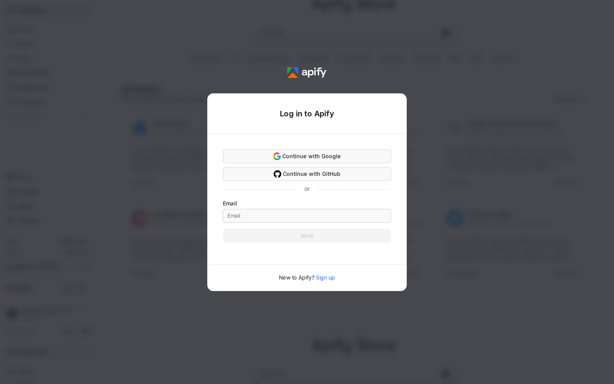

How to Research European Car Dealers and Compare Prices with AutoScout24 Data
A practical guide to pulling vehicle listings from AutoScout24, Europe's largest car marketplace, using the NanoScrape AutoScout24 Scraper. Each listing includes price, mileage, fuel type, transmission, power output, dealer name, dealer location, and phone number. The actor runs HTTP-only with 128 MB of RAM, covers 10 countries (Germany, Austria, Switzerland, France, Italy, Spain, Netherlands, Belgium, Luxembourg, Sweden), and costs about $3 per 1,000 listings without detail pages.

In this tutorial
What you get
Each run returns one JSON object per vehicle listing. The object includes fields from both the search results page (SERP) and, when includeDetails is true, the individual listing detail page:
- Vehicle identity:
make,model,model_version,title. - Specs:
fuel_type,transmission,power_hp,power_kw,body_type,color,num_doors,num_seats,drive_train. - Condition:
mileage_km,first_registration. - Price:
price,currency. - Dealer:
dealer_name,dealer_location,dealer_phone,seller_type(Dealer or Private). - Media and provenance:
image_url,image_urls(all photos),source_url,country_code,scraped_at.
{
"id": "ca83343a-6238-4378-a33d-c7d069b24a14",
"title": "BMW 320d M Sport",
"make": "BMW",
"model": "320d",
"model_version": "M Sport",
"price": 28900,
"currency": "EUR",
"mileage_km": 45000,
"first_registration": "2021-06-01",
"fuel_type": "Diesel",
"transmission": "Automatik",
"power_hp": 190,
"power_kw": 140,
"body_type": "Limousine",
"color": "Schwarz",
"num_doors": 4,
"num_seats": 5,
"drive_train": "Hinterrad",
"dealer_name": "BMW Niederlassung Berlin",
"dealer_location": "10115 Berlin, DE",
"dealer_phone": "+4930123456",
"seller_type": "Dealer",
"image_url": "https://prod.pictures.autoscout24.net/listing-images/...",
"source_url": "https://www.autoscout24.de/angebote/bmw-320d-m-sport-...",
"country_code": "DE",
"scraped_at": "2026-08-15T06:14:12Z"
}Spec fields like body_type, color, num_doors, and drive_train come from the detail page. Set includeDetails: false if you only need price and mileage for a fast market overview.
Use cases
- Dealer price comparison: scrape the same model across multiple countries and rank dealerships by asking price. Germany tends to price BMW and Mercedes lower than Austria or Switzerland for the same spec.
- Price monitoring: run the actor daily on a saved search URL and track how dealer asking prices shift over days or weeks.
- Fleet procurement: pull 500 or more listings for a single model, filter by mileage and year, and build a shortlist with dealer phone numbers included.
- Cross-country arbitrage: compare prices for the same model in DE vs. FR or ES. Import rules and tax differences often create price gaps worth acting on.
- Market analysis: aggregate listing volumes by fuel type to track diesel vs. electric vs. hybrid adoption across regions.
Prerequisites
- A free Apify account. Sign up at the actor page. Every account gets $5 of free monthly usage credit, enough for about 1,600 SERP-only listings.
Open the actor and sign up
- Open the NanoScrape AutoScout24 Scraper on Apify.
- Click Try for free. Sign up with Google or email. The free tier includes $5 of monthly credit, enough to test without entering a payment method.
- Once signed in, click Try for free again on the actor page. The Apify Console opens with the input form pre-loaded and ready to configure.

Configure your search
The actor accepts two input styles. Use whichever matches how you prefer to work:
Option A: Paste a search URL
Go to any AutoScout24 country site (autoscout24.de, .ch, .at, .fr, .it, .es, or .nl), apply your filters in the browser, then copy the URL from the address bar and paste it into the Search URLs field. This approach carries over every filter you set, including sort order, body type, and mileage range.
{
"searchUrls": [
"https://www.autoscout24.de/lst?sort=price&desc=0&atype=C&cy=D&make=bmw&model=3er&pricefrom=15000&priceto=30000"
],
"maxResults": 100,
"includeDetails": true
}Option B: Use make and model fields
Fill in the Make, Model, and Country fields. The actor builds the search URL for you. You can still add priceFrom, priceTo, yearFrom, yearTo, and fuelType to filter results.
{
"make": "BMW",
"model": "3er",
"country": "DE",
"priceFrom": 15000,
"priceTo": 30000,
"yearFrom": 2020,
"maxResults": 100,
"includeDetails": true
}
Apply filters
All filters are optional and can be combined. They apply server-side, so you only pay for listings that match.
- priceFrom / priceTo: numeric price bounds in EUR (or the local currency of the target country). Useful for setting a budget ceiling when building a shortlist for fleet procurement.
- yearFrom / yearTo: integer years for first registration. Filter to 2020 and later to exclude high-mileage older stock.
- fuelType: one of
petrol,diesel,electric,hybrid,lpg,cng, orhydrogen. Omit to return all fuel types. - includeDetails: set to
true(default) to fetch each listing's detail page for body type, color, doors, seats, drive train, and full description. Set tofalsefor a faster run at lower cost when you only need price, mileage, and dealer info. - maxResults: a hard cap on how many listings to return, from 1 to 4,000. The default is 100.
Example: find electric cars under 25,000 EUR registered from 2022 onward in Germany, SERP data only for a quick price overview:
{
"fuelType": "electric",
"country": "DE",
"priceTo": 25000,
"yearFrom": 2022,
"maxResults": 200,
"includeDetails": false
}maxResults to 10 on your first run to verify the filters return the listings you expect before committing to a large run.Run and download results
Click Save and Run at the bottom of the input form. SERP-only runs typically finish in under a minute for 100 results. Detail-page runs take longer because the actor visits each listing individually.

Open the Dataset tab to see results in a table. Click Export at the top right to download:
- JSON for code, databases, or automation tools like n8n, Make, and Zapier.
- CSV for Google Sheets, Excel, or Airtable.
- JSONL for streaming pipelines and large result sets.
maxResults cap. You do not need to handle pagination yourself.Supported countries
Pass the country field with any of the following two-letter codes. One run targets one country. To compare prices across markets, run the actor once per country and merge the datasets.
DE- Germany (autoscout24.de)AT- Austria (autoscout24.at)CH- Switzerland (autoscout24.ch)FR- France (autoscout24.fr)IT- Italy (autoscout24.it)ES- Spain (autoscout24.es)NL- Netherlands (autoscout24.nl)BE- Belgium (autoscout24.be)LU- Luxembourg (autoscout24.lu)SE- Sweden (autoscout24.se)
Automate with the API
Call the actor from your own code or pipeline using the Apify REST API. Replace YOUR_TOKEN with the Personal API token found in Apify Console › Settings › Integrations.
curl -sS -X POST \
'https://api.apify.com/v2/acts/santamaria-automations~autoscout24-scraper/run-sync-get-dataset-items?token=YOUR_TOKEN' \
-H 'Content-Type: application/json' \
-d '{
"make": "Volkswagen",
"model": "ID.3",
"country": "DE",
"fuelType": "electric",
"priceTo": 25000,
"maxResults": 100,
"includeDetails": false
}'The run-sync-get-dataset-items endpoint starts the actor, waits for it to finish, and returns the full dataset in one HTTP response. For runs with hundreds or thousands of listings, use the async endpoint and poll for completion.
Use with AI agents via MCP
Connect the actor to any MCP-compatible AI client (Claude Desktop, Claude.ai, Cursor, VS Code, LangChain) using the Apify MCP server URL:
https://mcp.apify.com?tools=santamaria-automations/autoscout24-scraperOnce connected, prompt your agent: "Use autoscout24-scraper to find all BMW 3 Series listings under 30,000 EUR in Germany from 2020 onward. Return results as a table sorted by price." Clients that support dynamic tool discovery (Claude.ai, VS Code) receive the full input schema automatically.
Use with n8n
Connect AutoScout24 data to any n8n workflow using the Apify node. Set the actor to santamaria-automations/autoscout24-scraper, pass your input JSON, and the node returns the dataset items. A common pattern: run on a schedule, filter for new listings by comparing against a Google Sheet, and send an alert when a matching car appears. Get started with n8n.
What it costs
- Actor start: $0.001 per GB of RAM used, minimum $0.001. At 128 MB RAM, each run costs $0.001 to start regardless of how many listings it returns.
- SERP listing (price, mileage, dealer info): $0.003 per result on the free tier.
- Detail page (body type, color, doors, seats, description): an additional $0.005 per listing when
includeDetailsis true. - SERP-only in practice: 1,000 listings costs about $3.00. The $5 free monthly credit covers roughly 1,600 results.
- With full details: 1,000 listings costs about $8.00 ($3 SERP + $5 detail). The free credit covers roughly 625 results.
Pricing has been in effect since 2026-04-02. Only listings that successfully return data are charged. Listings that fail to load or are filtered out are not counted.
maxResults to 10 and includeDetails to false on your first run to validate your filters for less than a cent before scaling up.FAQ
Do I need a paid Apify plan?
No. Every Apify account gets $5 of free usage credit each month. At $3 per 1,000 SERP listings, the free tier covers roughly 1,600 results per month before you need to add a payment method.
Can I scrape multiple makes or models in one run?
Yes. Pass multiple URLs in the searchUrls array. For example, pass one URL for BMW 3 Series and another for Mercedes C-Class to pull both in a single run. Results from each URL are returned together in the same dataset.
Can I monitor prices automatically without running the actor manually?
Yes. Use the Apify Scheduler to run the actor on a recurring schedule (daily, weekly, or hourly). After each run, use a webhook to send the new results to Google Sheets, a database, or a Slack notification. You can also pipe results through n8n to filter for new listings that match your criteria.
What is the difference between SERP results and detail results?
SERP results come from the AutoScout24 search results page and include price, mileage, fuel type, transmission, power, dealer name, dealer location, and phone number. Detail results add body type, color, number of doors, number of seats, drive train, all listing images, and the full vehicle description. Set includeDetails: false if you only need the SERP fields to run faster and at lower cost.
Does the actor work on all AutoScout24 country sites?
Yes. Set the country field to any of: DE, AT, CH, FR, IT, ES, NL, BE, LU, or SE. One run targets one country site. To compare prices across countries, run the actor once per country and merge the datasets.
Is scraping AutoScout24 legal?
Scraping publicly available data is generally permitted in most jurisdictions. The hiQ Labs v. LinkedIn ruling in the US established that scraping public data does not violate the Computer Fraud and Abuse Act. AutoScout24's Terms of Service restrict automated access, so use the data for personal research, price monitoring, and analytics rather than republishing listing data in bulk. Consult a lawyer for specific compliance questions.
Related resources
- AutoScout24 Scraper actor page: Full spec sheet: pricing table, all input fields, supported countries, and structured schema for LLM agents.
- AutoScout24 Scraper on Apify: Full actor documentation, all input parameters, and complete output field reference.
- How to Scrape eBay Product Listings: Scrape active eBay listings by keyword or URL. Get price, condition, bids, shipping, and 20-plus fields per listing across 8 regional marketplaces.
- How to Scrape AliExpress Product Listings: Extract AliExpress product data including price, ratings, order counts, and seller info for dropshipping research and price comparison.